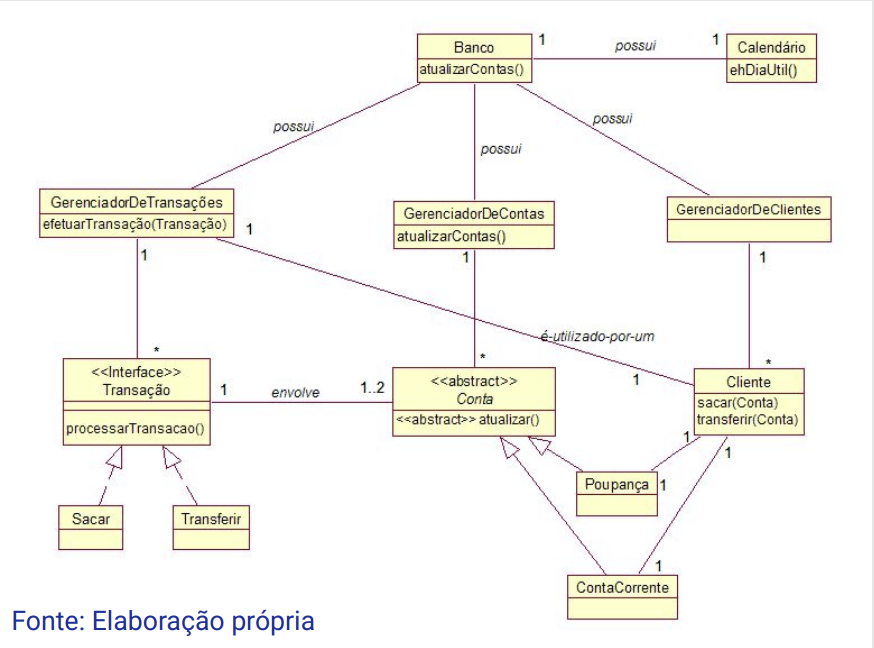
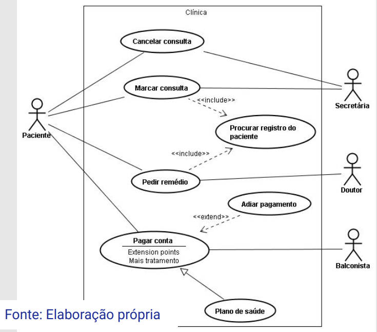
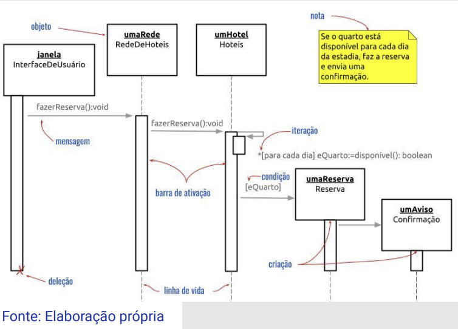

Disciplinas
ANÁLISE E PROJETO DE SOFTWARE ORIENTADO A OBJETOS. Concluído
Materiais
Análise e Projeto de Software Orientado a Objetos - Módulo 2 - Unidade 2 sendProf° ministrante: Luciano Édipo Pereira da Silva.
Conteúdo
Linguagem de Modelagem Unificada (UML).
- Origem e Composição da UML;
- Object Management Group (OMG);
- Famílias de Diagramas UML:
- Estruturais;
- Comportamentais;
- Interação;
- Uso dos Diagramas.
Origem e Composição da UML.
- A Linguagem de Modelagem Unificada (UML) surgiu com o intuito de criar uma notação completa e padronizada, a fim de que todos pudessem usar para documentar o desenvolvimento de software orientado a objetos;
- No entanto, a UML não apresenta um processo, mas apenas a notação;
- Por isso, alguns anos depois de sua criação, passaram a surgir propostas de processos de desenvolvimento com base na UML.
Object Management Group (OMG).
- Organização internacional sem fins lucrativos, fundado em 1989;
- Objetiva criar padrões de interoperabilidade para sistemas de softwares, além do UML ela define:
- BPMN: Notação para modelagem de processos de negócios;
- CORBA: Arquitetura de comunicação entre softwares;
- SysML: Extensão do UML para engenharia de sistemas.
Famílias de Diagramas UML.
- Diagramas estruturais: diagramas de pacotes, de classes, de objetos, de estrutura composta, de componentes e de distribuição;
- Os diagramas estruturais são usados para representar a estrutura estática de um sistema, mostrando os elementos do sistema e seus relacionamentos.
Estruturais: Diagrama de Classes.
- Finalidade: Representar a estrutura de classes e seus relacionamentos.
- Mostra classes, atributos, métodos e os seus relacionamentos, como associações, generalizações e dependências.
- Diagrama de Objetos: Mostra instâncias de classes (objetos) e seus estados em um ponto específico no tempo.
- Diagrama de Pacotes: Organiza e agrupa elementos do modelo (como classes) em pacotes.
- Diagrama de Componentes: Representa componentes físicos e suas relações.

Famílias de Diagramas UML.
- Diagramas comportamentais: diagramas de casos de uso, de atividades e de máquina de estados;
- Os diagramas comportamentais descrevem o comportamento dinâmico de um sistema, incluindo interações e atividades.
Comportamentais: Caso de Uso.
- Finalidade: Representar as funcionalidades do sistema do ponto de vista do usuário.
- Detalhes: Mostram atores (usuários ou sistemas) e casos de uso (funcionalidades) que eles realizam.
- Diagrama de Atividades: Modela fluxos de atividades e processos de negócio.
- Diagrama de Máquina de Estados: Descreve os estados pelos quais um objeto passa durante seu ciclo de vida.

Famílias de Diagramas UML.
- Diagramas de interação: diagramas de comunicação, de sequência, de tempo e visão geral de integração.
- Os diagramas de interação são um subconjunto dos diagramas comportamentais que focam em interações entre objetos.
Interação: Diagrama de Sequência
- Finalidade: Representar a sequência temporal das mensagens trocadas entre objetos.
- Diagrama de Comunicação: Mostra interações entre objetos e o sequenciamento de mensagens trocadas com ênfase nos objetos.
- Diagrama de Visão Geral de Interação: Combina aspectos de diagramas de atividades e de sequência para mostrar um fluxo de controle maior que inclui interações.

Uso dos Diagramas.
- Não é necessário usar todos os diagramas da UML durante o desenvolvimento de um sistema;
- É convencional que se use de 3 a 5 diagramas e os mais recorrentes são: Diagramas de classe, de componentes, de casos de uso, de atividades e de sequência/comunicação;
- Usam-se os diagramas que representem e apresentem informações úteis para o processo de desenvolvimento.
Referências:
BOOCH, Grady; RUMBAUGH, James; JACOBSON, Ivar. UML: Guia do Usuário. 2. ed., rev. e atual. Rio de Janeiro: Elsevier, 2012. ISBN 9788535217841.FOWLER, Martin. UML essencial: um breve guia para linguagem padrão. 3. ed. Porto Alegre: Bookman, 2011. ISBN 9788560031382.
LARMAN, Craig. Utilizando UML e padrões: uma introdução à análise e ao projeto orientados a objetos e desenvolvimento iterativo. Porto Alegre: Bookman, 2011. ISBN 9788577800476.
SCHACH, Stephen R. Object-oriented & classical software engineering. 7 ed. Boston: Mcgraw-hill Higher Education, 2007. ISBN 9780073191263.
WAZLAWICK, Raul Sidnei. Análise e design orientados a objetos para sistemas de informação: modelagem com UML, OCL e IFML. Rio de Janeiro: GEN LTC, 2014. ISBN 9788595153653.
WAZLAWICK, Raul Sidnei. Análise e Design Orientados a Objetos para Sistemas de Informação: Modelagem com UML, OCL e IFML. 3ª ed. Rio de Janeiro, Elsevier, 2015. ISBN 9788535279849.